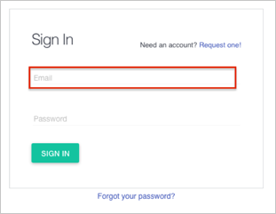
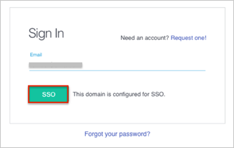

Contact CloudMine Support and request that they enable SAML 2.0 for your account.
Include the following information:
x.509 Certificate to download, and then upload:
Sign into the Okta Admin Dashboard to generate this variable.
IdP Entity ID: Copy and paste the following:
Sign into the Okta Admin Dashboard to generate this variable.
IdP Target URL: Copy and paste the following:
Sign into the Okta Admin Dashboard to generate this variable.
CloudMine will process your request. After receiving a confirmation email, you can start assigning people to the application.
Done!
Notes:
IdP-initiated flows, SP-initiated flows, and Just In Time (JIT) provisioning are all supported.
For SP-initiated flows:
Enter your Email into the corresponding field.

Wait until the SSO button appears.
Click the SSO button.
